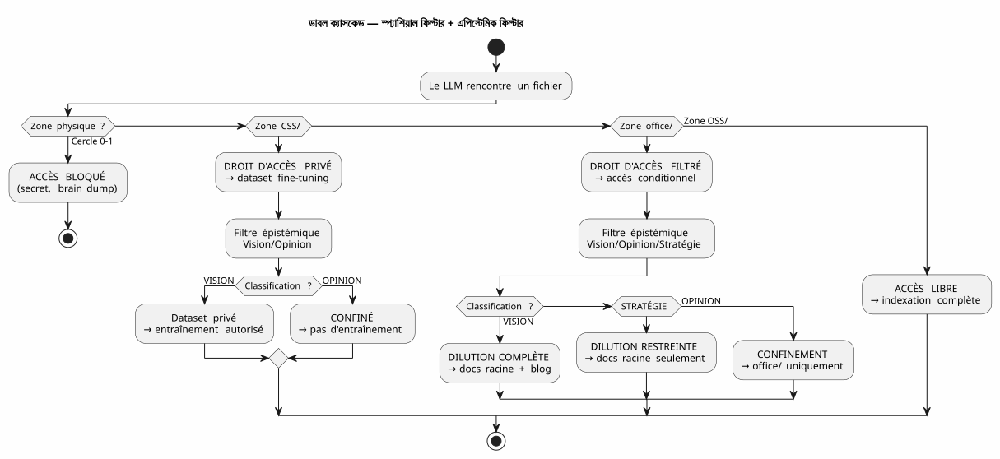
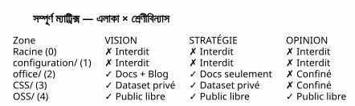

LLM গভর্নেন্স ম্যাট্রিক্স — আপনার কৃত্রিম বুদ্ধিমত্তার নিরাপত্তা কেন গাছের গঠন থেকে শুরু হয়?
Publié le 04 May 2026
- সমস্যা: প্রম্পট ইঞ্জিনিয়ারিং একটি বালির দুর্গ
- আমার উত্তর: 4×4 ম্যাট্রিক্স
- কীভাবে LLM এই মেট্রিক্সকে ব্যবহার করে?
- বাস্তবায়ন : টাইপড gradle কাজ
- কেন এটি একটি ম্যানিফেস্টো, শুধু একটি স্পেক নয়
- সাম্পূর্ণ ক্যাস্কেড — ব্রেন ডাম্প থেকে ব্লগ পোস্ট
- সুবিধা/অসুবিধা
- উপসংহার : আপনার ফাইলগুলো সংগঠিত করুন, আপনার প্রম্পটগুলো না
- রেফারেন্স
মাসবিশেষে, আমি এজেন্ট গোবর্নেন্স নিয়মগুলো জমা করে রাখেছিলাম। ফাইলগুলি উৎসাহী, চেকলিস্টগুলো আলস, সেশন শেষের ছয় ধাপের প্রোটোকল। তবুও, একটি প্রশ্ন পেন্ডিং ছিল : কীভাবে LLM জäne কি এটা তার একটি ফাইল সাথে কাজ করার অধিকার আছে ?
উত্তরটি একটি প্রম্পটে নেই। তা ফাইল সিস্টেমে আছে।
এটি আর্কিটেকচার স্পেসিফিকেশন যা উত্তরকে ব্যবহারযোগ্য করে তোলে — la LLM শাসন ম্যাট্রিক্স.
সমস্যা: প্রম্পট ইঞ্জিনিয়ারিং একটি বালির দুর্গ
একটি ফাইল যখন LLM-কে দেওয়া হয়, তখন সে সে সকল কিছু পায়। বিষয়বস্তু, হ্যাঁ — কিন্তু এছাড়াও নিরাপত্তা বন্ধনের অনুপস্থতি। LLM জানে না এই ফাইল ধারণ করে কি না একটি রহস্য, একটি কল্পিত মত, বা বন্ধ সোর্স কোড। এটি ইন্ডেক্স করবে। সারসংক্ষেপ করা, উদ্ধৃত করা, অন্যান্য ডেটার সাথে মিশ্রণ করা — এবং সম্ভবত এটি একটি সর্বজনীন এমবেডিং বা ব্যবহারকারীর প্রতিক্রিয়া প্রকাশ করা।
প্রচলিত প্রদর্শন, এটি প্রম্পট :
"Tu es un assistant sécurisé. Ne divulgue jamais d'informations confidentielles.
Si tu détectes un secret, ignore-le. Si tu détectes une opinion, ne la répète pas."এই প্রম্পটে তিনটি সমস্যা আছে:
-
এটি LLM-এর ভালো ইচ্ছার উপর নির্ভর করে। একটি যথেষ্ট বড় মডেল জন্য
জটিল বাগ সমাধান করা একটি নির্দেশনা বাইপাস করতে যথেষ্ট বড় প্রসঙ্গের 200k টোকেনে ডুকে পড়া নিরাপত্তা।
-
এটি সন্দর্ভগত, কাঠামোগত নয়। প্রম্পট পরিবর্তন করুন, LLM পরিবর্তন করুন,
সেশন পরিবর্তন করুন — এবং নিয়মটি চলে যায়।
-
এটি স্কেল করে না। প্রতিটি নতুন ফাইলের ধরণ, প্রতিটি নতুন স্তর
গোপনীয়তা একটি নতুন শর্ত প্রয়োজন। আপনার প্রম্পট একটি কে�েউ পূর্ণাঙ্গভাবে পড়েন না এমন নিয়ন্ত্রণালয় পাঠ্য
|
একটি সিস্টেমের নিরাপত্তা কখনো কোনও নির্দেশে নির্ভর করা উচিত নয় যেটি বিস্মরণ করতে পারে, পাশ পারতে পারে বা লোড না করতে পারে। একে একটি… যা স্পষ্টভাবে ইচ্ছা না করলে অতিক্রম করা যায় না, সেই বাধা। |
আমার উত্তর: 4×4 ম্যাট্রিক্স
আমি আমার ওয়ার্কস্পেসে বাস্তবায়িত সমাধানটি একটি জোন ম্যাট্রিক্স × অ্যাক্সেসের অধিকার LLM। সে LLM-কে সতর্ক থাকতে বলেন না। সে দেয়। গঠনগতভাবে অসংভব অবিবেক.
Failed to generate image: PlantUML preprocessing failed: [From <input> (line 10) ]
@startuml
skinparam backgroundColor #FEFEFE
skinparam defaultTextAlignment center
skinparam wrapWidth 220
title LLM গভর্নেন্স মেট্রিকস — জোন × অ্যাক্সেসের অধিকার
package "কর্মক্ষেত্র" {
rectangle "মূল
(বৃত্ত ০)
^^^^^
Syntax Error? (Assumed diagram type: activity)
@startuml
skinparam backgroundColor #FEFEFE
skinparam defaultTextAlignment center
skinparam wrapWidth 220
title LLM গভর্নেন্স মেট্রিকস — জোন × অ্যাক্সেসের অধিকার
package "কর্মক্ষেত্র" {
rectangle "মূল
(বৃত্ত ০)
━━━━━━
ব্রেইন ডাম্প
মুক্ত চিন্তা
[LLM নিষিদ্ধ]" as Z0 #FFB3B3
rectangle "কনফিগারেশন/
(বৃত্ত ১)
━━━━━━
গোপনীয় তথ্য, টোকেন
প্রাইভেট ইনফ্রা
[নিষিদ্ধ LLM]" as Z1 #FFB3B3
rectangle "office/
(বৃত্ত ২)
━━━━━━
সম্পাদক ডেটা
লেখ, ক্যাড্রেজ
[ফিল্টারড ভিশন]" as Z2 #FFF3B3
rectangle "foundry/private/
(বৃত্ত ৩)
━━━━━━
Code closed source
[ডেটাসেট গোপন]" as Z3 #B3D9FF
rectangle "foundry/public/
(বৃত্ত 3)
━━━━━━
কোড ওপেন সোর্স
Apache 2.0
[বিনামূল্য প্রবেশ]" as Z4 #B3FFB3
}
Z0 -[hidden]-> Z1
Z1 -[hidden]-> Z2
Z2 -[hidden]-> Z3
Z3 -[hidden]-> Z4
@enduml
পাঁচ_zone (স্থানিক মাত্রা — জিডিপিআর)
ওয়ার্কস্পেসের প্রতিটি জোন একটি GDPR স্তর আছে যা নির্ধারণ করে কোথায় ফাইলটি পারে র্যুটেড হওয়া :
জোন |
RGPD স্তর |
বিষয়বস্তু |
সার্বজনীন RAG অ্যাক্সেসের অধিকার |
মূল |
0 — আত্মীয় |
মস্তিষ্ক ডাম্প, LLM সংলাপ |
প্রতিবন্ধিত— কখনও ইন্ডেক্স করা হয়নি |
|
1 — সীমিত মালিক |
গোপন তথ্য, টোকেন, API কী |
নিষidium— কখনো ইন্ডেক্সকৃত হয়নি |
|
2 — সীমিত ಸಹযোগী |
সಂಪাদনালয় ডেটা, ফ্রেমিং, প্রশিক্ষণ |
শোধিত— দৃষ্টি মাত্র |
|
৩ — শর্তাধীন খোলা |
বন্ধ উৎস কোড, SaaS সার্বজনীন নয় |
নিষিদ্ধ— প্রাইভেট ডেটা শুধুমাত্র |
|
4 — স্থানীয় পাবলিক |
অ্যাপাচি 2.0 কোড, প্রকাশিত প্লাগইন |
মুক্ত— সম্পূর্ণ ইন্ডেক্সিং |
নিয়মটি সহজ : ফাইলের পথ LLM কে এতে কী করতে পারে তা নির্ধারণ করে রক্ষা করার জন্য কোনো মেটাডেটা নেই, ফ্রন্টম্যাটারে কোনো ট্যাগ যোগ করার দরকার নেই, প্রতিটি কমিটের জন্য কোনো ম্যানুয়াল শ্রেণীবিভাগ নেই। ফাইলটি`OSS/? এটি পাবলিক। এটি …-এ`configuration/? ত âgé অspandeo।
জ্ঞানসংক্রান্ত শ্রেণীবিভাগ (দ্বিতীয় মাত্রা)
স্থানিক মাত্রা বলে কোথায় রাউটার। কিন্তু একটি দ্বিতীয় অক্ষ আছে, লম্বের উপর লম্ব : কি রাউটার। কিছু ফাইল একটি অনুমোদিত জোনে তথ্য ধারণ করে যেগুলোকে এভাবে তুণে না দিতে হবে:

আবিজ্ঞানী শ্রেণীবিন্যাস গ্রিড, আমার শাসনের নিয়ম ২বিসে খোদা করা হয়েছে এজেন্ট :
| স্থিতি | সংজ্ঞা | Signal LLM | গন্তব্য | | VISION |স্থিতিশীল আর্কিটেকচার, পরীক্ষিত প্যাটার্ন | ঘোষণামূলক ভাষা, সেশন/টেস্টের রেফারেন্স | সম্পূর্ণ দিল্যুশন + Blog | | কৌশল | ব্যবসায়িক পজিশনিং, দাম | বাজারের শব্দাবলী, প্রতিযোগিতা | শুধুমাত্র মূল ডকুমেন্ট | | OPINION | অনুমান, বৈধ না করা فرضী | অনুমানগত ভাষা, অনুভূতি | নিবদ্ধতা সার্কেল 0 |
দুই ভাবের সংমিশ্রণ — শারীরিক অঞ্চল × জ্ঞানসম্পর্কী শ্রেণীবিন্যাস — আকার তৈরিসম্পূর্ণ মেট্রিক্স(empty)

কীভাবে LLM এই মেট্রিক্সকে ব্যবহার করে?
ম্যাট্রিক্সটি LLM যে পড়ে এমন কোনো ডকুমেন্ট নয়। একটি বাধা implicit এনকোডেড প্রেক্ষাপটের সংমিশ্রণ ভেক্টরে (EPIC 9 — চলমান) বাস্তবায়নের).
এখানে LLM প্রতিটি সেশনে যে কিছু পায়:
VECTEUR COMPOSITE DE CONTEXTE
├── RAG pgvector → OSS/ + office/Vision
│ (similarité sémantique sur contenu publiable)
├── Knowledge Graph graphify → OSS/
│ (relations exactes entre artéfacts publics)
├── Knowledge Graph privé → CSS/
│ (relations entre code closed source — jamais exporté)
├── Métadonnées de zone → chaque fichier taggé par zone physique
│ (le LLM sait s'il est dans office/ ou OSS/)
└── Historique des décisions → WORKSPACE_VISION.adoc
(contexte temporel des arbitrages)বাস্তবে, যখন LLM আমাকে বলে :
Je vais indexer le contenu de edster/ pour enrichir le knowledge graph...এজি মেটাডেটা লЭМএল কখনো বাক্য শেষ করতেই হয়নি, সেটা উত্তর দেয়: edster/`_available`CSS/, স্তর 3 →साधारณะ जignan ग्राफे অ্যাক্সেস নিষিদ্ধ। RAG তা দেখে না। গ্রাফটা তা স্পর্শ করে না। ব্যবহারকারীর উত্তর ন সে এটি উদ্ধৃত করে না
|
স্থানীয় অনটোলজি একটিইউনিক্স অনুমতিLLM‑দের জন্য. আপনি একটি প্রক্রিয়ার সাথে সতর্ক থাকতে বলেন না। |
বাস্তবায়ন : টাইপড gradle কাজ
ম্যাট্রিক্স একটি দার্শনিক নয়। এটি কোড। এখানে কাজের চুক্তি। Gradle ja eti probog kore:
abstract class ZoneAwareIndexer @Inject constructor(
private val rootDir: DirectoryProperty,
private val configServer: ConfigServerProperty // → configuration/
) : DefaultTask() {
@Input
val zoneFilter: SetProperty<Zone> = project.objects.setProperty(Zone::class.java)
@OutputFile
val ragIndex: RegularFileProperty = project.objects.fileProperty()
@TaskAction
fun index() {
val allowedPaths = zoneFilter.get().flatMap { it.resolve(rootDir.get()) }
val forbiddenPaths = Zone.RESTRICTED.resolve(rootDir.get())
+ Zone.INTIMATE.resolve(rootDir.get())
// Le RAG ne voit jamais configuration/ ni la racine
// CSS/ alimente un index privé, pas celui-ci
// office/ est filtré par le classifieur Vision/Opinion
}
}
enum class Zone {
INTIMATE, // Cercle 0 — racine
RESTRICTED, // Cercle 1 — configuration/
EDITORIAL, // Cercle 2 — office/
CLOSED_SOURCE, // Cercle 3 — foundry/private/
OPEN_SOURCE // Cercle 3 — foundry/public/
}কাজটি পরীক্ষণযোগ্য। আপনি একটি পরীক্ষা লিখতে পারেন যা যাচাই করে :
@Test
fun `le RAG n'indexe jamais configuration`() {
val index = ZoneAwareIndexer(rootDir, configServer)
index.zoneFilter.set(setOf(Zone.OPEN_SOURCE, Zone.EDITORIAL))
index.index()
assertThat(index.ragIndex).doesNotContain("configuration/")
}
@Test
fun `le code closed source est exclu du RAG public`() {
val index = ZoneAwareIndexer(rootDir, configServer)
index.zoneFilter.set(setOf(Zone.OPEN_SOURCE)) // OSS only
assertThat(index.ragIndex).doesNotContain("edster")
}380 tests, 380 PASS. যেমন plantuml-gradle — নিরাপত্তা পরীক্ষা করা হয়েছে আশিত না।
কেন এটি একটি ম্যানিফেস্টো, শুধু একটি স্পেক নয়
এই নথি একটি আর্কিটেকচার স্পেসিফিকেশন, কারণ এটি সংজ্ঞায়িত করে :
-
কিছুআয়াম(স্থানীয়, জ্ঞানতাত্ত্বিক)
-
কিছুনিয়মকীর্ণ নিয়ম(জোন → অ্যাক্সেসের অধিকার)
-
Un কর্মের চুক্তি(টাইপড গ্রেডল, পরীক্ষাযোগ্য)
-
একটিরেফারেন্স প্রয়োগ(আমার ওয়ার্কস্পেস)
কিন্তু এটিও একটিস্পষ্টকারণ তিনি একটি বিতর্কে তাদের দৃষ্টিভঙ্গি প্রকাশ করেন ব্যাপক : একটি LLM-এর ডেটা অ্যাক্সেস কীভাবে নিয়ন্ত্রণ করা যায়?
উद्यোগের প্রতিক্রিয়া হলো প্রম্পট ইঞ্জিনিয়ারিং + গার্ড্রেল্স
পোস্ট-হোক ক্লাসিফায়ারগুলো। আমার উত্তর হল: আপনার ফাইলগুলো রাখুন সঠিক ফাইলগুলো**. বাকি অংশটি স্বয়ংক্রিয়।
|
এই ঘোষণাপত্রটি বলে না "LLMs সাঙ্গতকর হওয়া উচিত". এটি বলে : "সাঙ্গতকরণ একটি LLM আপনার নিরাপত্তা নিয়মের উপর একটি ফলাফল আপনার সিস্টেমের ফাইলগুলো, আপনার প্রম্পটের নয়। |
সাম্পূর্ণ ক্যাস্কেড — ব্রেন ডাম্প থেকে ব্লগ পোস্ট
সম্পূর্ণ চক্র প্রদর্শনের জন্য, এখানে কিভাবে এই মেট্রিক্স ধারণাটি জন্ম নিয়েছিল। এবং ডিলিউট করা হয়েছে :
Session 4 mai 2026 — Feedback global du workspace
│
├→ Le LLM identifie : "la dualité public/privé est invisible"
│ → Classifié VISION (constat architectural vérifiable)
│
├→ PICTURE_ME_ROLLIN_MATRICE_4X4.adoc — STIMULUS (Cercle 0)
│ → Brain dump structuré, classification VISION confirmée
│
├→ DILUTION → WORKSPACE_AS_PRODUCT.adoc (section Matrice 4×4)
│ → La spec vit dans les documents racine
│
├→ DILUTION → WORKSPACE_ORGANIZATION.adoc (OSS/CSS)
│ → La granularisation est documentée
│
└→ ARTICLE 0117 (ce document) → cheroliv.com
→ La VISION est publiée(“হে, র্যাগ जানে না যা edster closed source") একটি আর্কিটেকচার স্পেসিফিকেশনে পরিণত হয়েছে একটি সেশনের মধ্যে কমে প্রকাশিত। এটি STIMULUS প্যাটার্নের क्रियाकलाप।
সুবিধা/অসুবিধা
| এই পদ্ধতি (স্থানীয় অটালজি + মেট্রিক্স) | ক্লাসিক পদ্ধতি (অনুপ্রেরণা + সুরক্ষা সীমা) |
|---|---|
মেকানিক — ফাইল সিস্টেম অ্যাক্সেস ব্লক করে, LLM না |
বর্ণনামূলক — প্রম্পটটি LLM-কে সতর্ক হওয়ার অনুরোধ করে |
Testable — গ্রেডল টাস্ক কনট্রাক্ট ৩৮০+ টেস্ট توسط যাচাই করা হয় |
অপরীক্ষনীয় — "এলএলএম নিয়মকে মেনে চলেছে কি?" একটি খোলা প্রশ্ন |
LLM‑স্বাধীন — মডেল পরিবর্তন করুন, ফোল্ডারগুলো থাকে |
নির্ভরশীল LLM — প্রতিটি মডেল প্রম্পটকে ভিন্নভাবে ব্যাখ্যা করে |
Scalable — নতুন ডেটা টাইপ = নতুন ফোল্ডার, কোডে কোনো পরিবর্তন না |
অ-স্কেলযোগ্য — নতুন ডেটা টাইপ = প্রম্পটের নতুন শর্ত, নতুন রিগ্রেসন ঝুঁকি |
Auditable — ফাইল সিস্টেমটি অডিট ট্রেল হয় |
অডিটযোগ্য নয় — প্রম্পটে কোনো ইতিহাস নেই, কোনো অন্তর নেই, কোনো দুronto নেই |
বাধ্য : একটি প্রাথমিক সংগঠিত অনুশাসন প্রয়োজন |
বাধা : প্রতিটি সেশনে প্রম্পট লেখার জন্য একটি নিয়মিত অনুশীলন প্রয়োজন। |
উপসংহার : আপনার ফাইলগুলো সংগঠিত করুন, আপনার প্রম্পটগুলো না
এলএলএম গভর্নেন্স মেট্রিক্স, যা আমি recién বর্ণিত করেছি, একটি পণ্য নয়। এটি একটিআর্কিটেকচার স্পেসিফিকেশন— এবং এটাই কারণ সে প্রকাশযোগ্য
যা এটিকে দৃঢ় করে, সেটি হল যে এটি LLM‑এ কোনো东西 চায় না। এটি তাকে বিশ্বাস করে না। এটি তার সমন্বয় বা বোঝাপড়া উপর নির্ভর করে না। ফরাসি থেকে, অথবা তার ভালো ইচ্ছা। এই ফাইল সিস্টেম‑এ ভিত্তিক — সবচেয়ে নিম্ন স্তর, সবচেয়ে স্থিতিশীল, সবচেয়ে পরীক্ষিত সমস্ত স্ট্যাকের অংশ।
আমি যখন আমার LLM-কে বলি "তুমি সকলে ইন্ডেক্স করতে পারো`OSS/কিছু নেই `configuration/, et `office/`শুধুমাত্র যদি এটি ভিশন হিসাবে শ্রেণীবদ্ধ হয় এটি কোনো নির্দেশনা না। এটিই একটি filtre — কোটলিনে বাস্তবায়িত, ৩৮০ টেস্ট দ্বারা যাচাই করা হয়েছে, LLM ডেটা দেখার আগে এটি চালানো হয়।
এটি কেউ বলতে 'এই ড্রয়ারে দেখবেন না' বলার পার্থক্য এবং চাবি তালার দরজা বন্ধ করুন। শাসন এজেন্ট যেটি আমি নির্মাণ করছি থেকে কিছু মাস হুই। ম্যাট্রিক্স ফার্নিচারের পরিকল্পনা।
রেফারেন্স
-
অনুচ্ছেদ ০১১৬ — স্বয়ংক্রিয় রู้বদ্ধিক বিভাজন
-
অনুচ্ছেদ ০১০৮ — একটি আইএএজেন্টকে AsciiDoc ব্যবহার করে শাসন করা